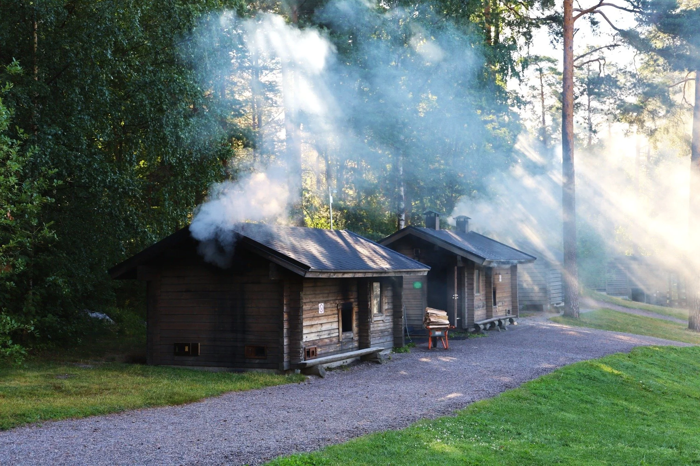

Saunat
Kuusijärvi on monipuolinen ja pääosin esteetön luonto- ja virkistysalue Itä-Vantaalla. Tule ulkoilemaan, uimaan, saunomaan ja rentoutumaan!
Alueelta kulkee myös suora reitti Sipoonkorven kansallispuistoon.

Kuusijärvi on monipuolinen ja pääosin esteetön luonto- ja virkistysalue Itä-Vantaalla. Tule ulkoilemaan, uimaan, saunomaan ja rentoutumaan!
Alueelta kulkee myös suora reitti Sipoonkorven kansallispuistoon.
